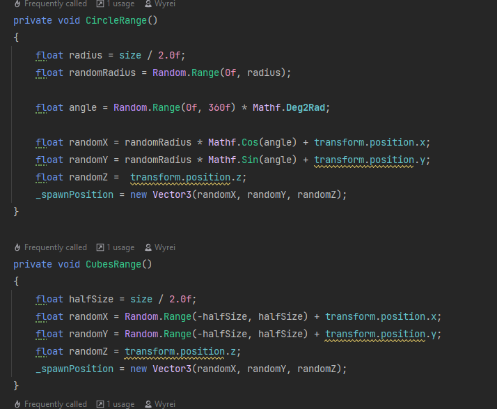
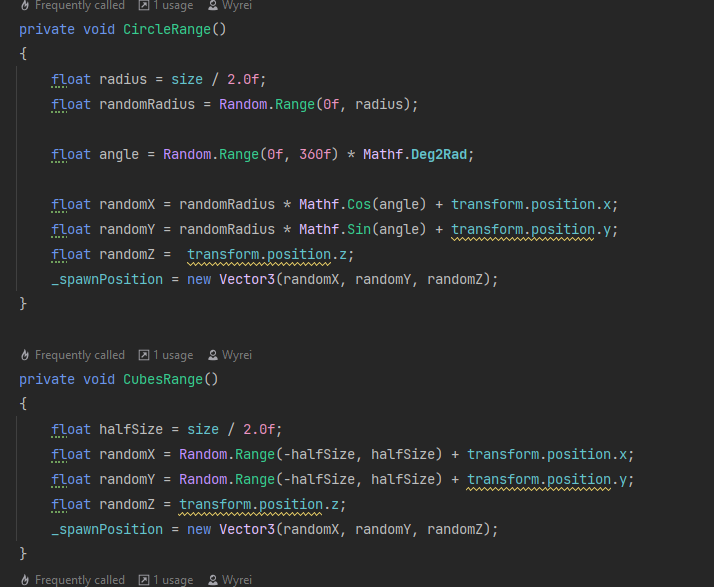

Spawner
 

The code spawns enemies using an algorithm.
Initially, it asks for the type of spawner, which can be either in the form of circles or cubes.
Upon instantiation, it changes the name of the instance, resets multiple timers, and adds objects to a list that
keeps track of the number of spawned enemies.
The circlerange and cubesrange variables define the size range for the circles or cubes,
ensuring that they spawn within the specified range